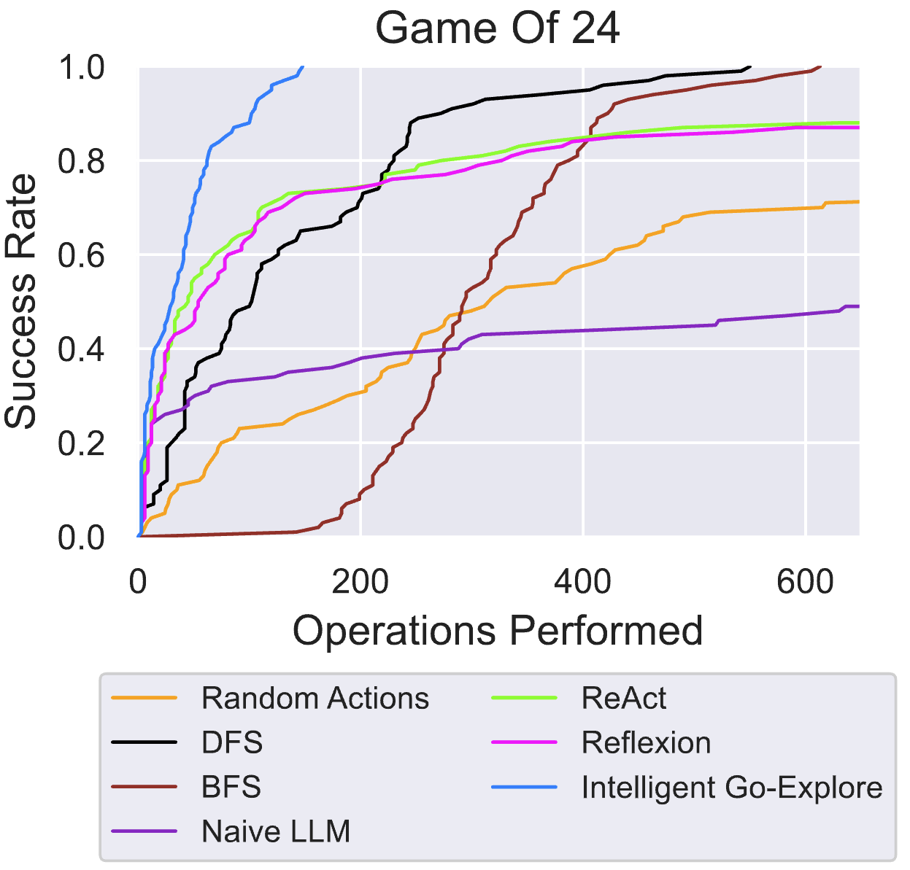

Intelligent Go-Explore:
Standing on the Shoulders of Giant Foundation Models

Abstract
Go-Explore is a powerful family of algorithms designed to solve hard-exploration problems, built on the principle of archiving discovered states, and iteratively returning to and exploring from the most promising states. This approach has led to superhuman performance across a wide variety of challenging problems including Atari games and robotic control, but requires manually designing heuristics to guide exploration (i.e. determine which states to save and explore from, and what actions to consider next), which is time-consuming and infeasible in general. To resolve this, we propose Intelligent Go-Explore (IGE) which greatly extends the scope of the original Go-Explore by replacing these heuristics with the intelligence and internalized human notions of interestingness captured by giant pretrained foundation models (FMs). This provides IGE with a human-like ability to instinctively identify how interesting or promising any new state is (e.g. discovering new objects, locations, or behaviors), even in complex environments where heuristics are hard to define. Moreover, IGE offers the exciting and previously impossible opportunity to recognize and capitalize on serendipitous discoveries that cannot be predicted ahead of time. We evaluate our algorithm on a diverse range of language-based tasks that require search and exploration. In Game of 24, a problem testing multistep mathematical reasoning, IGE reaches 100% success rate 70.8% faster than the best classic graph search baseline. Next, in BabyAI-Text, a challenging partially observable gridworld where an agent has to follow language instructions, IGE exceeds the previous state-of-the-art with orders of magnitude fewer online samples. Finally, in TextWorld, a rich text game, we show the unique ability of IGE to succeed in settings requiring long-horizon exploration where prior state-of-the-art agent FM agents like Reflexion completely fail. Overall, IGE combines the tremendous strengths of FMs and the powerful Go-Explore algorithm, opening up a new frontier of research into creating more generally capable agents with impressive exploration capabilities.
Method
Intelligent Go-Explore (IGE) integrates the intelligence and internalized human notions of interestingness from giant pretrained FMs into all stages of the Go-Explore algorithm, enabling FM agents to robustly explore in complex environments. Bottom: Classic Go-Explore solved hard exploration problems by archiving novel discovered states, resetting to promising ones via domain-specific heuristics, and then performing random exploration. Top: Our approach, Intelligent Go-Explore, enables Go-Explore to tackle any problem that is representable in the context of a large language or multimodal model. Instead of manually defining heuristics, we query the foundation model at all stages, enabling our approach to automatically catch and return to serendipitous discoveries, and harness the power of FM agents to explore.
Experimental results
we evaluate Intelligent Go-Explore across three text environments that require search and exploration. We demonstrate IGE's ability to handle partially observable and complex observation spaces, discover solutions involving long chains of actions, and effectively improve the ability of FM agents to explore.
Game of 24
We first demonstrate the effectiveness of IGE in a mathematical reasoning task, Game of 24. The goal is to perform basic arithmetic operations \( (+, -, \times, \div) \) starting from 4 numbers to obtain 24. For example, given input \( (4, 9, 10, 13) \), a possible solution could be \( (10 - 4) \times (13 - 9) = 24 \).
IGE explores the Game of 24 with the intelligence of FMs and reaches 100% success rate on average 70.8% quicker than DFS, the next best baseline. IGE completes all problems within 150 environment operations. Our use of archiving and intelligent action selection allows us to greatly outperform prior LLM agents with an equal number of operations performed. The success rate is computed over 100 test problems.
BabyAI-Text
Next, we show that IGE scales to the BabyAI-Text environment, which is a procedurally-generated partially-observable 2D gridworld with text-based observations. The agent is given a textual goal instruction which could correspond to one or more instructions in a sequence, e.g. "pick up X and then go to Y". The task is challenging even for humans to complete and requires forming a model of the world from partial text descriptions. This kind of state observation would make it hard to define heuristics to determine how good any particular state is, as in classic Go-Explore. The optimal path to a solution may include moving blocking objects as well as finding keys to open doors.
IGE can find solutions to challenging tasks in the BabyAI-Text environment more effectively and with orders of magnitude fewer online steps than prior RL-trained baselines GLAM. Task types are in order of difficulty. As tasks become more difficult, the performance gap of IGE v.s. the LLM baselines grows. We show the mean and 95% bootstrap confidence interval over 25 seeds per environment type.
TextWorld
Finally, we show IGE's ability to tackle tasks requiring long-horizon memory and planning, exploration, and commonsense in TextWorld, a classic text-based agent benchmark. We consider three challenging games in Textworld: Treasure Hunter, The Cooking Game, and Coin Collector. In each game, the agent needs to complete the task while navigating a maze of different rooms, while only seeing the current room's description in text. The agent interacts with the world using free-form natural language commands, such as "go east" or "cook potato with oven". In Treasure Hunter, the agent has to find a specific item by exploring, finding keys, and unlocking doors and containers. In The Cooking Game, the agent must find a recipe, locate and process (e.g., dice, cut, chop) ingredients, and cook them according to the recipe using various kitchen appliances (e.g., oven, pan). In Coin Collector, the agent must find a coin randomly located in the maze, testing its navigation and exploration skills.
IGE outperforms state-of-the-art FM agents in three challenging text games in TextWorld. These results illustrate the powerful capabilities of planning, commonsense reasoning, and exploration of IGE. Notably, in the Coin Collector game where hard exploration is required, we observe BFS-like search behavior emerge in IGE, enabling it to find the most efficient solution where all other approaches exhaust the environment horizon. We show the mean and 95% bootstrap confidence interval over 25 seeds for each game.
Citation
Acknowledgements
This work was supported by the Vector Institute, the Canada CIFAR AI Chairs program, grants from Schmidt Futures and Open Philanthropy, an NSERC Discovery Grant, and a generous donation from Rafael Cosman.
We thank Aaron Dharna, Ben Norman, and Jenny Zhang from our lab at the University of British Columbia for insightful discussions for insightful discussions and/or feedback on early drafts of this work.
The website template was borrowed from Jon Barron.